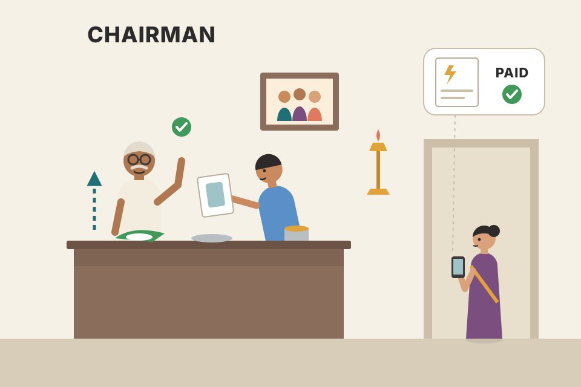
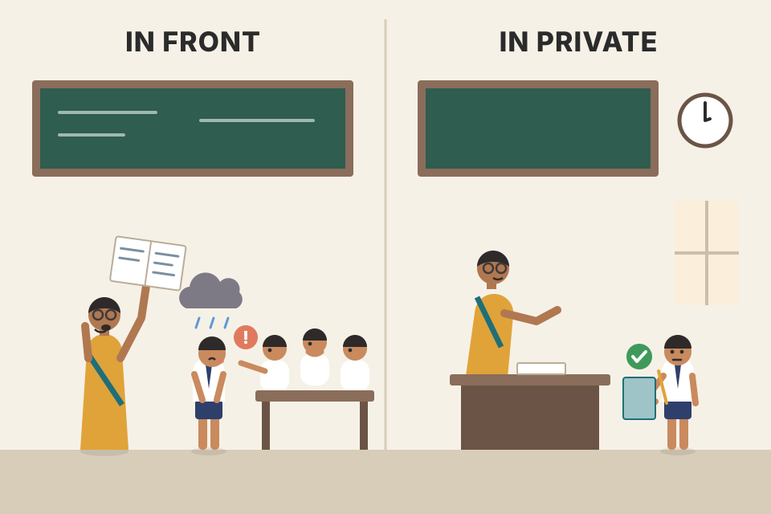
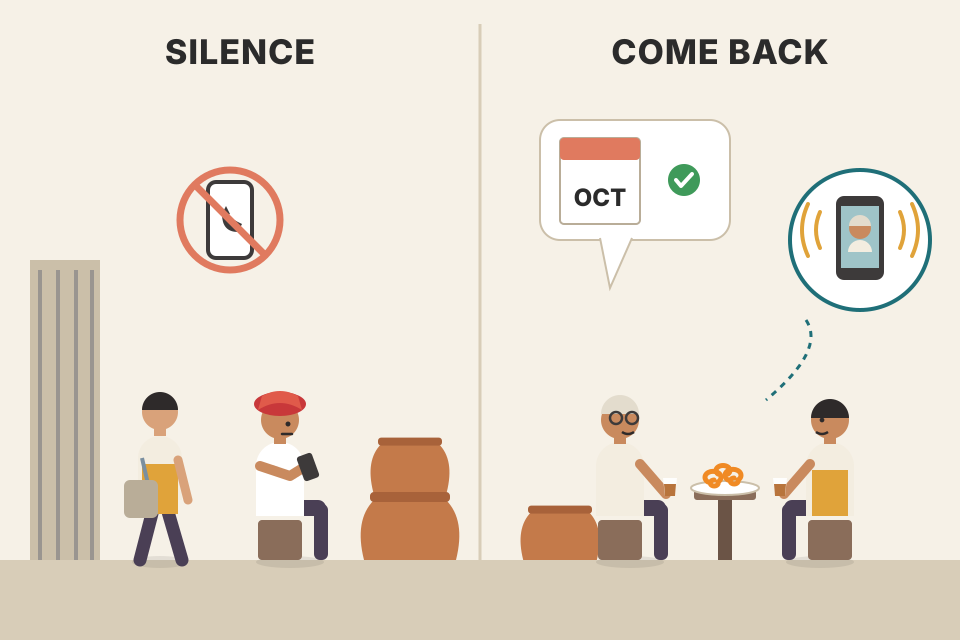
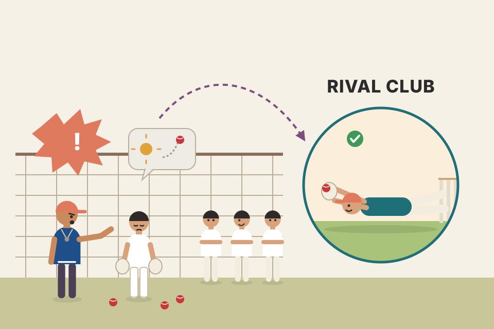
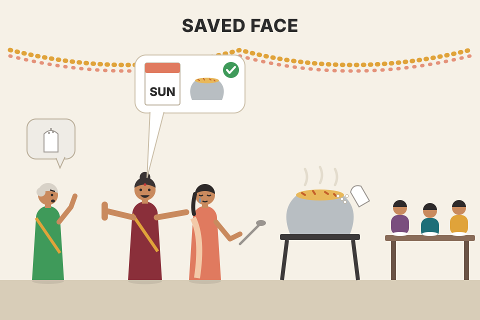
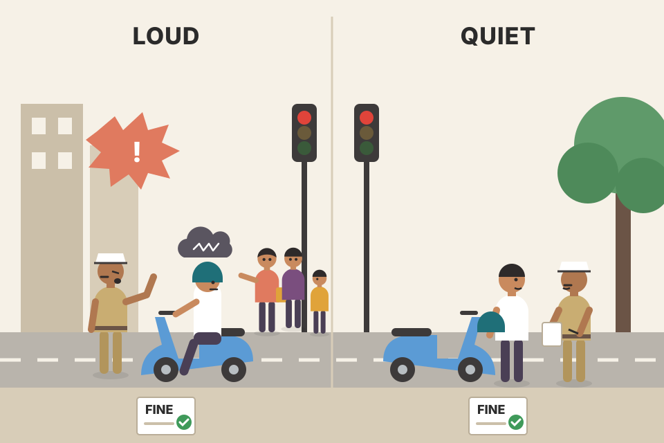

DALE CARNEGIE · HOW TO WIN FRIENDS · PART FOUR · CHAPTER 5 · PDF p216–219
Let the Other Person Save Face
When you have to correct, demote, overrule or let someone go, leave them a way to walk out with their dignity. The work still changes; their pride does not have to break.
This is one of the shortest chapters in the book, four pages and four stories. General Electric needed to take a brilliant but touchy engineer off a job he was bad at, and did it by giving him a grander title instead of a demotion. An accountant who had to lay off seasonal staff every spring learned that a few honest words of praise turned bitter ex-employees into people who came back gladly. Then come two meetings with the same kind of mistake and opposite bosses: one humiliated a supervisor in front of his peers and lost him to a competitor; the other defended a young marketer in front of hers and gained someone who would never let him down. Carnegie's point is simple and easy to forget: even when you are right and the other person is plainly wrong, making them lose face destroys something you need.
Principle 5 of Part Four
Let the other person save face.
How the chapter fits together
pdf p216–219 · read this first
Where it sits. This is the fifth of nine principles in Part Four, "Be a Leader: How to Change People Without Giving Offense or Arousing Resentment". Part Four is about the moments when you have authority and something has to change. The four chapters before this one told you how to open a correction: begin with praise (Ch.22), point to mistakes indirectly (Ch.23), mention your own mistakes first (Ch.24) and ask questions instead of giving orders (Ch.25). This chapter is about how the other person leaves the conversation. Next comes praising every improvement (Ch.27), which turns a saved face into forward motion.
The argument as a chain. Each row reacts to the one before it.
Problemwe must remove, reprimand or fire someone→we trample their pride to get it done
How we do itgetting our wayfault-findingthreatscriticizing in front of others
Cheap fixa few minutes' thoughta considerate word or tworeal understanding of their attitude
Proof (+)Steinmetz: new title, no stormGranger: laid off with praise, come back gladly
ContrastClark's VP: public attack → good worker lostvsMazzone's boss: public support → lifelong loyalty
Even if rightloss of face only destroys ego→Saint-Exupéry: what counts is how he sees himself→Principle 5
Limitsthe job still changes, the test is still redone→save the face, not the mistake
What "face" means: the picture of yourself that you want others to accept, as competent, decent and respected. "Losing face" is having that picture torn in public; "saving face" is being allowed to keep it while the facts are still dealt with. The phrase came into English from Chinese in the 1800s; Indian readers know it well as izzat or maan. (The definition is ours; the chapter assumes you know it.)
01 · THE OPENING STORY
Charles Steinmetz: moved out of a job he was failing at, and happy about it
pdf p216
Carnegie opens with a problem every manager meets sooner or later: a person who is brilliant at the work but bad at the role they have been given, and who would be badly hurt by an ordinary demotion.
General Electric"years ago" (early 1900s)head of the calculating departmentnew title: Consulting Engineer
The situation. Charles Steinmetz was, in Carnegie's words, a first-rank genius at electricity. But GE had made him head of its calculating department, and there he was a failure: running a department was a different job from being a genius in it.
The difficulty. GE could not simply take the department away. Steinmetz was indispensable to the company, and he was also very sensitive. Offend him and they might lose him, or lose the best of him.
The move. They gave him a new title: Consulting Engineer of the General Electric Company. It was a new name for the work he was already doing. Then they quietly put someone else in charge of the department.
The result. Steinmetz was happy. GE's officers were happy too. They had moved their most temperamental star out of a role that did not suit him, and there had been no storm, because they let him save face.
Notice what changed and what did not. The real problem was fixed: Steinmetz no longer ran the department. What GE refused to do was make the fix look like a verdict on him. The same decision was delivered as a promotion in name and a recognition of what he was truly good at.
Beyond the book: who Steinmetz was
Charles Proteus Steinmetz (1865–1923) was a German-born mathematician and engineer who worked for GE in Schenectady, New York. His work on alternating current and on hysteresis losses in electrical machines made him one of the most famous engineers in America. He was short, had a spinal deformity, and was known as a striking and sometimes prickly personality, which fits Carnegie's "highly sensitive". The chapter gives no dates; the details here come from standard biographies.
Picture it

A joint family in Kerala has a grandfather who has run the household accounts for forty years, but his eyesight and memory are slipping and bills are going unpaid. Nobody tells him "you can't handle the money any more". Instead the family names him the one whose blessing is needed for every big expense, the "chairman" of the household, while his daughter-in-law quietly pays the electricity bill each month. He sits a little taller at dinner, and the bills get paid.
Where it breaks: the grandfather may see through it and feel managed, especially if the new role is empty. Steinmetz's new title worked because it described real work he was already doing and valued. An honorary title with nothing behind it is a different, weaker move.
What's happening behind it
The book's explanation: Steinmetz's pride was tied to being seen as a great engineer. Removing him as department head in the ordinary way would have told everyone he had failed. The new title told everyone the opposite story, that GE valued him so much it wanted him free to do only what he did best. Both stories were based on the same facts; GE chose the one that left his self-respect whole.
Beyond the book: the sociologist Erving Goffman, who wrote about "face-work" in 1955, described exactly this: when one person's face is threatened, others in the room usually help to cover it, because a public loss of face embarrasses everyone. Organisations do it with titles. The modern tech industry even has a name for Steinmetz's new role: the individual-contributor track (staff, principal, distinguished engineer), built so that great engineers do not have to manage people to keep rising.
At work
The Steinmetz problem is common in engineering: your strongest engineer was made tech lead or engineering manager and is struggling. 1:1s slip, the team's planning is chaotic, and they are unhappy too, because they miss the deep work. The blunt fix ("we're moving you off the lead role") lands as a public failure. The Steinmetz fix is to make the move a real step up on the other track: "We want you as staff engineer for the platform, owning the architecture across three teams. Priya will take over people management so you're not spending your week in planning meetings." It only works if the new role is real, with scope, influence and pay, and if you say it to them privately before anyone else hears.
Interview angle. "Tell me about a time you had to move someone out of a role." A good answer shows you separated the decision (they could not stay in the role) from the framing (what the move says about them), found a role that used their real strengths, and spoke to them first and privately.
Reflect, then reveal
Your best backend engineer, Arjun, became team lead six months ago. Sprints are slipping, two people have complained about missed 1:1s, and he looks tired. You need someone else to lead the team. Write the first few lines you would say to him.
How often we trample on pride, and how little it costs not to
pdf p216
After the GE story Carnegie stops and makes his case directly. Letting someone save face, he says, is vitally important, and very few of us ever stop to think about it.
What we do instead. We push ahead over other people's feelings to get our own way. The chapter lists the usual forms:
Getting our own way without a thought for what it costs the other person.
Finding fault.
Issuing threats.
Criticizing a child or an employee in front of other people.
All of these are done, he says, without even considering the hurt to the other person's pride.
What it would take instead is tiny. Carnegie names three things, all cheap:
A few minutes' thought before you speak.
A considerate word or two.
A genuine understanding of the other person's attitude: how they see the situation.
These, he says, go a long way to taking the sting out. And he asks us to remember this especially the next time we face the unpleasant duty of firing or reprimanding someone, which is exactly where the next story goes.
The key word is "in front of others". Every face-losing story in this chapter happens in public: a department everyone knows Steinmetz heads, a meeting full of a supervisor's peers, a meeting full of a young marketer's colleagues. Face is about how you look in the eyes of others, so an audience multiplies the damage.
Picture it

A schoolteacher in Chennai catches a boy copying homework. She can hold his notebook up in front of the class and read out the copied answer, or she can ask him to stay back for two minutes after the bell. Either way he redoes the homework. Only one of them leaves him dreading her class for the rest of the year, and copying more carefully instead of less.
Where it breaks: a teacher sometimes has a real reason to address the whole class (if half of them are copying, a general reminder is fair). Carnegie's target is singling out one person in front of others, not every public statement of a rule.
What's happening behind it
From the book: the hurt is to pride, and pride is what Part One said people guard most (Ch.1, Ch.2). The fix is not to drop the message but to spend a little thought on how the person will feel hearing it, and to show you understand their side.
Beyond the book: Penelope Brown and Stephen Levinson's politeness theory (1978, 1987) calls criticism, orders and refusals face-threatening acts and shows that people in every culture they studied soften them with the same kinds of moves: acknowledging the other person, giving reasons, offering options, choosing private settings. Carnegie's "considerate word or two" is one of those universal tools.
At work
The engineering versions of "criticizing an employee in front of others" are everywhere: a sarcastic comment in a team channel, a stand-up where you ask "why is this still not done?", a PR review where you tag the whole team on someone's mistake, a client call where you correct a colleague's number in front of the client. The few-minutes fix: move the correction to a DM or a 1:1, lead with what you understand ("I know the migration ate your week"), and keep the public channel for facts and next steps.
Interview angle. "How do you give feedback to a teammate?" A strong answer says you give it privately, soon, about the work, and after checking how they saw the situation; and that you praise in public and correct in private.
Self-audit: this week, did I…
Connects to
Why criticism makes people defend instead of change: Part One, Ch.1.
Asking instead of ordering (threats are orders with a stick): Part Four, Ch.4.
Marshall Granger's seasonal staff: fired the same, felt completely different
pdf p216–217
The first story about firing comes from a letter to Carnegie by a certified public accountant. It is the cleanest test of the principle in the book, because the outcome (the person loses the job) is identical either way. Only the face changes.
Marshall A. Grangercertified public accountantseasonal stafflet go after the income-tax rush
The situation. Granger's firm did most of its business in one season. Every year, once the income-tax rush was over, it had to let a large number of temporary staff go. He opens by admitting that firing people is no fun, and being fired is even less fun.
The old way. Nobody in the profession enjoys doing it, so the custom had grown up of getting it over as fast as possible. The person was called in, told to sit down, and told in a sentence or two that the season was finished, there was no more work for them, and anyway they had always known the job was only for the busy months.
The effect of the old way. The staff left disappointed and feeling "let down". Most of them were accountants for life, so they would stay in the same field for decades, and they kept no particular affection for a firm that had dropped them so casually.
The new way. Granger decided to do it with more tact. Before calling each person in, he thought carefully about the work they had done over the winter. Then he told them, specifically and honestly, what they had done well. His example: reminding one man of a tough assignment the firm had sent him on in Newark, where he had been under pressure and had come through very well. He told each person that the firm was proud of them, believed in them, expected them to go far wherever they worked, and was rooting for them.
The result. People left feeling much better about being let go. They did not feel let down. They understood that if there had been work, the firm would have kept them. And when the firm needed staff again the next season, they came back with real personal warmth towards it.
"Firing employees is not much fun. Getting fired is even less fun."Marshall A. Granger, in a letter quoted by Carnegie (pdf p216)
Three details that make it work.
He prepared. He reviewed each person's season before the conversation. The praise was specific (Newark), so it could not be mistaken for a script.
It was true. Granger adds a small but crucial condition in brackets: he tells someone they have done a fine job if they have. This is not flattery; Carnegie's whole book draws that line (Ch.2).
It explained the decision without blaming the person. The message was "the work ran out", not "you weren't good enough". That is the face-saving frame: the reason lies in the situation, not in them.
Worked example: the same layoff, two ways
The quick way
"Have a seat. So, the season's wrapped up and there aren't any more assignments for you. You knew this was a seasonal role. HR will send the paperwork."
Fast, true, legal. Leaves the person feeling disposable.
The Granger way
"Before we talk about the end of the season, I want to say something about your work. The Newark audit was a hard one, the client was difficult and the deadline was brutal, and you delivered. We're proud of that. We don't have work after April, and that's the only reason this is ending. Wherever you go next, you'll do well, and we'd be glad to have you back next season."
Same outcome. Specific praise, a reason outside the person, a door left open.
Picture it

A wedding caterer in Jaipur hires extra cooks and servers for the November–February wedding season. When the season ends, one owner just stops calling; another sits each helper down with a cup of chai, tells the young man that guests kept asking who made the jalebis at the Sharma wedding, and says "Come back in October, your place is ready." Next October, the second caterer's phone rings first.
Where it breaks: seasonal work comes back every year, so the warmth pays off visibly. In a real layoff the company may never rehire. Carnegie's point still holds (people talk, and you meet them again as clients, referrals and colleagues), but the payoff is less certain and the kindness has to be worth doing for its own sake.
What's happening behind it
From the book: the old way hurt because it was casual. Being dropped in two sentences tells a person they did not matter. Granger's way gave each person the thing their pride needed most at that moment: evidence that their work had been seen and valued. With that, "no more work" became a fact about the calendar, not a verdict on them.
Beyond the book: research on layoffs (for example Joel Brockner's work on procedural and interactional justice) finds that how people are treated during a layoff, whether they are given an honest reason and treated with dignity, strongly affects their anger, their willingness to sue, and the morale of the people who stay. The survivors watch how the leavers are treated.
At work
Engineering teams do Granger's conversation more often than they think: a contractor whose engagement ends, an intern at the end of the summer, a teammate moved to another project, a project shut down. The quick version is a calendar invite and two lines. The Granger version takes ten minutes of preparation: look back at their commits, design docs or incident work, pick one or two specific things they did well, and say them out loud. Then give the real reason (budget, roadmap, contract length), and offer a reference. In a real layoff, follow HR and legal guidance on what you can say, but nothing stops you from naming what the person did well.
Interview angle. "Have you ever had to deliver bad news to a team member?" Show that you prepared, gave an honest reason that did not humiliate them, recognised their specific contribution, and kept the relationship (they later referred someone, or came back).
Rewrite it
Pick a message that delivers hard news, think how you would rewrite it, then reveal a face-saving version and what changed.
Fred Clark's production meeting: a vice president, a cornered supervisor, and a good worker lost
pdf p217–218
Carnegie then reports a pair of stories that two students told at the same session of his course, set side by side on purpose: faultfinding against face-saving. This is the first, and it shows the damage.
Fred ClarkHarrisburg, Pennsylvaniaa production meetinga vice president vs a supervisor
The situation. At a production meeting in Clark's company, a vice president started firing sharp questions at one of the production supervisors about a production process. His tone was aggressive. The questions were clearly meant to show that the supervisor had done a poor job.
The supervisor's reaction. He did not want to be humiliated in front of his peers, so he gave vague, slippery answers.
The escalation. The vagueness made the vice president lose his temper. He tore into the supervisor in front of everyone and accused him of lying.
The result. Whatever working relationship the two had was destroyed in a few minutes. The supervisor, whom Clark describes as basically a good worker, was of no use to the company from then on. A few months later he left to work for a competitor, where, Clark hears, he is doing a fine job.
Look closely at the chain, because the book spells it out. The supervisor's evasiveness was not the cause of the problem; it was a response to the threat of public humiliation. The vice president created the very behaviour he then punished. And the company paid twice: it lost a good worker, and a competitor gained one.
Picture it

A cricket coach at a district academy, in front of the whole squad, demands of a young wicketkeeper why he dropped three catches. The boy mumbles about the light and the ball swinging late. The coach shouts that he is making excuses and lying to cover his laziness. The boy keeps wicket for the academy the rest of the season without ever really trying again, then joins a rival club, where he becomes their best keeper.
Where it breaks: a teenager in sport and a grown supervisor in a factory have different stakes (one is a hobby, the other a living). But both are exactly the same loop: a public attack, a defensive mumble, a bigger attack, and someone talented who goes to play for the other side.
What's happening behind it
From the book: the supervisor's first instinct was to protect his face in front of his peers. When questions are designed to expose you, being vague is the only cover you have. Calling him a liar destroyed his face completely, and with it any reason to work hard for that company.
Beyond the book: Amy Edmondson's research on psychological safety (from 1999 on) found that teams where people fear being blamed in public report fewer errors, not because they make fewer, but because they hide them. Google's Site Reliability Engineering book makes the same point about incidents: blame-focused reviews push engineers to hide details, so the root cause is never found. Clark's vice president got neither the facts nor the supervisor.
At work
This is a blameful incident review. The service went down; in the review meeting with twenty people on the call, a director asks the on-call engineer, in an edgy tone, why the alert was ignored for forty minutes. The engineer, cornered, says something vague about the alert being noisy. The director snaps: "That's not what the logs say." From that moment the engineer stops volunteering anything, and three months later updates their LinkedIn. The fix is the structure of a blameless postmortem: ask the questions privately first, ask "what did you see?" instead of "why didn't you?", and treat any vague answer as a sign the person feels unsafe, not as a lie.
Interview angle. "Tell me about a time you saw a conflict handled badly" or "How do you run a postmortem?" Explain that defensiveness is usually a response to public threat, and describe how you lowered the threat (private follow-up, blameless format) to get the real story.
Why you can't win an argument (even the VP's "win" was a loss): Part Three, Ch.1.
Criticism makes people defend themselves: Part One, Ch.1.
05 · THE POSITIVE CASE
Anna Mazzone's failed test market: the boss who defended her in front of everyone
pdf p218
The second student told a story with the same ingredients (a mistake, a meeting, a boss, an audience) and the opposite ending. Carnegie stresses the difference in approach and in result.
Anna Mazzonemarketing specialist, food packerfirst major assignmenttest-marketing a new product
The situation. Mazzone had been given her first big assignment: running the test market for a new product. When the results came in, she was devastated. She had made a serious mistake in planning the test, and the whole thing had to be run again.
Making it worse. She had no chance to talk to her boss about it before the meeting where she was due to report on the project.
In the meeting. When she was called on, she was shaking with fear and close to tears. She was determined not to cry, because she did not want the men in the room to say that women were too emotional to handle management jobs. She kept the report short: because of an error, she would repeat the study before the next meeting. Then she sat down and waited for her boss to explode.
What the boss did. He thanked her for her work. He said it was not unusual for someone to make a mistake on a new project, and that he was confident the repeat survey would be accurate and useful to the company. And in front of all her colleagues, he said he had faith in her, knew she had done her best, and that the cause of the failure was her lack of experience, not lack of ability.
The result. She walked out of that meeting with her head high, determined never to let that boss down again.
Dated setting. This is one of the newer course-member stories that the 1981 revised edition brought in (the preface says the revision replaced dated examples), and its office still feels old: a room of men, and a young woman afraid that crying would "prove" women unfit to manage. That fear says more about the room than about her. Today the same pressure falls on anyone who is the only one of their kind in a meeting: the only woman, the youngest, the newest hire, the one non-native speaker. The boss's move helps all of them in the same way.
Step through: same mistake, two meetings
What the boss's words did, one by one.
"Thank you for your work": the effort was seen before the error.
"Errors on new projects are normal": the mistake became ordinary, not shameful.
"I'm confident the repeat will be accurate": the fix was already happening; trust was shown in advance.
"Inexperience, not lack of ability": the cause was placed in something temporary and fixable, not in her character.
Said in front of her colleagues: the same audience that could have watched her lose face watched her keep it.
Notice that nothing was hidden. The error was admitted (by her), the study was redone, and nobody pretended it had not happened. The boss did not excuse the mistake; he protected the person who made it.
Picture it

At a big family function, a new daughter-in-law makes the biryani for the first time for fifty guests, and it comes out too salty. An aunt starts to comment. The mother-in-law cuts in, loudly enough for the room: "First time cooking for this many, and look how fast she managed it. I added too much salt my first time too. Next Sunday she'll make it again and we'll all see." The young woman, who was ready to cry, ends up making the best biryani in the family within a year.
Where it breaks: in a family the bond lasts a lifetime and the "boss" has known the person for years. At work, a manager may have seen only a few months of someone's work, so "I know you did your best" has to be backed by something real, or it sounds like a line.
What's happening behind it
From the book: Mazzone expected to lose face, and instead was given it, in public. The result was not relief alone but a strong sense of obligation: she resolved never to let him down. A person whose dignity you protect at their worst moment tends to repay it with loyalty.
Beyond the book: Carol Dweck's research on growth mindset and attribution research (Bernard Weiner's work) both point the same way: when failure is explained by a cause that is temporary and changeable ("inexperience", "a hard first project"), people try harder next time; when it is explained by a fixed trait ("you're not good at this"), they give up or hide. The boss chose the first explanation, out loud.
At work
A new engineer's first big feature launches and has to be rolled back because of a bug in their migration plan. In the weekly sync, they present the incident, voice shaking. The Mazzone-boss response, in front of the team: "Thanks for writing this up so clearly. First big launches nearly always teach us something about migrations; I've rolled back my share. I'm confident the second attempt will be solid. This was about not having done one of these here before, not about ability." Then, privately, you pair with them on the new plan. This is a blameless postmortem compressed into thirty seconds.
Interview angle. "Tell me about a time a teammate made a visible mistake. What did you do?" Describe protecting them in public (normalising the error, showing confidence), making sure the fix happened, and what it did for their later work and trust in you.
Connects to
Making the fault seem easy to correct ("lack of experience, not ability"): Part Four, Ch.8.
Expressing confidence that gives someone a reputation to live up to: Part Four, Ch.7.
Even when you are right: Saint-Exupéry, and Principle 5
pdf p218–219
Carnegie closes with the strongest form of the claim. It would be easy to read the chapter as "be gentle when the other person is partly right". He says the opposite: even if we are right and the other person is clearly wrong, making them lose face only destroys their ego, and gains us nothing.
Look back at the stories with that in mind. GE was right that Steinmetz should not run the department. Granger was right that the season was over. Mazzone's boss was right that the test was badly planned; she said so herself. Being right was never the question. The question was what the person would think of themselves when the conversation ended.
Saint-Exupéry. To finish, Carnegie quotes Antoine de Saint-Exupéry, the French aviation pioneer and writer (Beyond the book: best known today for The Little Prince, 1943). The passage treats a person's self-respect as something nobody else is entitled to damage, so seriously that harming it counts, for him, as a real wrong and not a mere rudeness. Its centre is one line:
"What matters is not what I think of him, but what he thinks of himself."Antoine de Saint-Exupéry, as quoted by Carnegie (pdf p218)
That line changes what "being right" is for. Your judgement of the person is your business. Their judgement of themselves is what decides how they behave tomorrow: whether they hide or try, stay or leave, do their best for you or for your competitor.
The chapter's last line is a lead-in that runs straight into the principle, the way every Part Four chapter ends: a real leader will always follow this rule. Read together, it says, in effect, that a real leader always lets the other person save face. The Part Four summary (pdf p238–239, on the Ch.30 page) frames all nine principles the same way: a leader's job often includes changing people's attitudes and behaviour, and these are the ways to do it.
Principle 5 of Part Four
Let the other person save face.
How to do it, gathered from the four stories. The chapter does not give a checklist; these are the moves its stories use.
Move
Who did it
What it looks like
Give a real role or title that matches strengths
GE with Steinmetz
Moving someone sideways into work they are good at, instead of "down"
Prepare and praise honestly before the hard news
Granger
Name something specific they did well, only if it is true
Put the reason in the situation, not the person
Granger, Mazzone's boss
"The work ran out"; "inexperience, not ability"
Don't corner people in public
Clark's VP (the counter-example)
Hard questions privately; facts in public
Defend people in public at their worst moment
Mazzone's boss
Thank, normalise the error, show confidence, in front of everyone
Still fix the problem
All four
The department, the layoff, the repeat study all still happened
Picture it

A traffic policeman in Mumbai stops a scooter rider for jumping a signal, in full view of a crowded junction. One constable lectures him loudly while people stare; another waves him to the side of the road, says "Sir, you're clearly in a hurry, but that signal is there for your safety," and writes the challan quietly. Both riders pay the same fine. Only one rides off muttering about the police for the rest of the week.
Where it breaks: the rider broke a law, and a public warning can sometimes deter others watching. Carnegie's principle is not that rule-breakers escape consequences; the fine is paid either way. It is that humiliation adds nothing useful to the fine.
What's happening behind it
From the book: people act out of the picture they hold of themselves. Damage that picture and you get defensiveness, withdrawal, or departure (Clark). Protect it and you get relief, warmth and loyalty (Steinmetz, Granger, Mazzone). The facts of the case are the same in both; the self-image is what you control.
Beyond the book: in many Asian cultures, and very much in India, this is not a management technique but a basic social rule. Concepts like izzat (honour, respect) mean that a public humiliation can wreck a relationship between families, not just two people. In multicultural engineering teams this matters even more: a correction that feels routine to someone from a blunt work culture can feel like a serious loss of face to a colleague from another.
At work
The hardest version for an engineering lead is when you are certain you are right: the design really will not scale, the estimate really was wrong, the bug really was theirs. That is exactly when the principle matters most, because certainty makes us careless with tone. Keep two lists in your head before a hard conversation: what must change (non-negotiable, stated clearly) and how they will see themselves afterwards (protected as much as you can). Then check which audience you are in. If there are other people present, defend the person and save the detailed correction for a private follow-up.
Interview angle. "Tell me about a time you were right and a colleague was wrong." Interviewers listen for whether you needed to win. A strong answer shows the problem got fixed, the colleague kept their standing, and the relationship got better, not worse, because of how you handled it.
Which response saves face?
Pick a response to see how Carnegie would judge it.
GE and Steinmetz. A genius at electricity was failing as head of the calculating department, but he was indispensable and very sensitive. GE made him "Consulting Engineer" (a new title for work he already did) and gave the department to someone else. Everyone was happy; no storm.
We rarely think about face. We get our way, find fault, threaten, and criticize children or employees in front of others without considering their pride. A few minutes' thought, a considerate word or two and real understanding of their attitude would remove most of the sting. Remember it above all when firing or reprimanding.
Granger's layoffs. The CPA firm used to let seasonal staff go fast and casually; they felt let down and kept no affection for it. Granger began reviewing each person's winter work and telling them honestly what they had done well (the Newark assignment) and that the firm believed in them. They left feeling better, understood they would have been kept if there were work, and came back warmly next season.
Clark's vice president. Aggressive public questions made a supervisor evasive; the VP lost his temper and called him a liar. The relationship was destroyed in minutes, a good worker became useless to the company, and he soon left for a competitor, where he did well.
Mazzone's boss. After her test-marketing error forced a full redo, he thanked her, called the error normal on a new project, expressed confidence in the repeat, and said in front of her colleagues that the cause was inexperience, not lack of ability. She left with her head up, resolved never to let him down.
Even when you are right, causing someone to lose face only destroys ego. Saint-Exupéry: what matters is what the person thinks of himself.
Principle 5: Let the other person save face. The decision, the fix and the consequences stay; the humiliation goes.
Term or phrase
Meaning on this page
Where
Principle 5 (Part Four)
Let the other person save face.
pdf p219
Face
The self-image a person wants others to accept: competent, decent, respected. (Our definition.)
whole chapter
Saving face
Being allowed to keep that self-image while the facts are dealt with.
pdf p216
Riding roughshod
Getting your way over people's feelings: fault-finding, threats, public criticism.
pdf p216
The Steinmetz move
A real new role or title matched to strengths, so a removal is not a public demotion.
pdf p216
"If he has"
Granger's condition: praise only what is true.
pdf p217
Let down
How casually dismissed staff felt, and why they kept no affection for the firm.
pdf p217
The escalation loop
Public attack → evasive answer → bigger attack → trust lost (Clark).
pdf p217–218
Inexperience, not inability
Placing the cause of a failure in something temporary and fixable.
pdf p218
What he thinks of himself
Saint-Exupéry's test: a person's own self-judgement is what counts.
pdf p218
08 · USE IT
Practice this week
beyond the book
Small exercises, each with a way to tell whether it worked. The exercises are ours; the ideas behind them are the chapter's.
Move one correction out of public. The next time you are about to correct someone in a meeting, a group chat or a PR thread with an audience, send it as a DM or raise it in your 1:1 instead. Worked if: they respond to the substance (and fix it) rather than explaining themselves.
The Granger prep. Before any hard conversation this week (a rejection, a reassignment, a "this isn't good enough"), spend five minutes writing down one specific, true thing the person did well. Say it first. Worked if: the conversation ends with them talking about next steps, not defending the past.
Choose the frame. When someone fails, explain the cause out loud as something temporary ("first time with this system", "the spec was thin") if that is honest. Worked if: their next attempt comes back faster, and they ask for help earlier.
Defend someone in public. When a colleague's mistake comes up in a group setting, be the Mazzone boss: thank, normalise, show confidence. Save any detail for later, in private. Worked if: they come to you first the next time something goes wrong.
Read evasion differently. When someone gives you a vague answer under pressure, ask yourself "Am I cornering them?" before "Are they hiding something?". Lower the stakes (private, a "what did you see?" question). Worked if: you get a clearer answer the second time.
09 · LIMITS
Where it can go wrong
pdf p216–218 · plus beyond the book
The book's own caveats first.
Being right is no excuse. Carnegie's main qualification is that the principle holds even when the other person is clearly wrong. You cannot opt out by being certain.
Praise must be true. Granger praises a fine job "if he has" done one. Inventing praise to soften a firing would be flattery, which the book rejects elsewhere (Ch.2).
The decision still happens. Steinmetz still lost the department, the seasonal staff were still let go, and the test was still repeated. Saving face changes how the news is delivered, not whether.
Beyond the book: our critique
Empty titles breed cynicism. The Steinmetz move works only if the new role is real. Companies that hand out grand titles to sideline people ("Head of Special Projects" with no projects) teach everyone that titles mean nothing, and the person usually sees through it.
Face-saving is not hiding the truth. If you protect someone's face so well that they never learn there was a problem, you have failed them. Mazzone's boss worked because she already knew the error and had a plan; most people need the clear message too, just in private.
Don't use it to dodge the conversation. Some managers "save face" by never giving the feedback at all, then surprise the person at review time or in a layoff. That is the most face-destroying outcome of all.
Layoffs have legal and HR rules. In a modern firing, what you may say (and promise) is often constrained. Praise for real work is almost always fine; promises of rehiring or vague "it's not about you" lines can be misleading if untrue.
Culture changes the weight. In India and much of Asia, public loss of face can be very serious, so the principle matters even more there. In very direct workplaces, too much face-saving can read as evasive. Adjust the wrapping, not the core: be clear about the problem, careful with the person.
Anecdotes, not proof. The chapter rests on four stories, two of them told by students in Carnegie's own course, who may be expected to tell success stories. Later research on psychological safety, attribution and layoff justice supports the general claim, but the stories are illustrations.
10 · TEST YOURSELF
Check yourself
pdf p216–219
Try to answer before opening each one. The first half is story recall; the second half is using the principle.
1. What was GE's problem with Charles Steinmetz, and how did it solve it?
Steinmetz, a genius at electricity, was failing as head of the calculating department, but he was indispensable and very sensitive, so GE did not dare offend him. They made him "Consulting Engineer of the General Electric Company", a new title for work he was already doing, and gave the department to someone else. He was happy, the officers were happy, and there was no storm.
2. Which ways of riding roughshod over people does Carnegie list, and what three cheap remedies does he offer?
Getting our own way, finding fault, issuing threats, and criticizing a child or employee in front of others, all without thinking of their pride. The remedies: a few minutes' thought, a considerate word or two, and genuine understanding of the other person's attitude.
3. How did Marshall Granger's firm traditionally let seasonal staff go, and what was the effect?
Quickly and casually after the tax season: sit down, the season is over, no more work, you knew it was only for the busy months. The staff felt disappointed and let down, and since most stayed in accounting for life, they kept no affection for the firm.
4. What did Granger do differently, and what condition did he attach to the praise?
He reviewed each person's winter work before calling them in, then told them specifically what they had done well (for example the tough Newark assignment), that the firm was proud of them, believed in them and was rooting for them. The condition: he said they had done a fine job only if they had.
5. What happened in Fred Clark's production meeting, and what did it cost the company?
A vice president aggressively questioned a supervisor in front of his peers, aiming to expose poor performance. The supervisor, not wanting to be embarrassed, answered evasively; the VP lost his temper, berated him and accused him of lying. The relationship was destroyed, the good worker became useless to the firm, and a few months later he left for a competitor, where he did well.
6. What exactly did Anna Mazzone's boss say, and where did he say it?
He thanked her for her work, said errors on a new project were not unusual, said he was confident the repeat survey would be accurate and valuable, and told her in front of all her colleagues that he had faith in her, knew she had done her best, and that inexperience, not lack of ability, caused the failure.
7. What is Saint-Exupéry's point, as Carnegie uses it?
That the only judgement that really counts is the person's own view of themselves, not yours, and that damaging someone's dignity is never justified. Carnegie places it right after "even when you are right" to shut the "but I was right" excuse.
8. In the Clark story, why was the supervisor evasive, and why does that matter?
Because the questions threatened to embarrass him in front of his peers. The evasiveness was a face-saving reaction to the VP's attack, not the original problem, so the VP created the behaviour he then called lying.
9. Application: your tech lead is failing at managing people but is your best engineer. What is the Steinmetz move, and what makes it work?
Offer a real role on the individual-contributor track (staff or principal engineer, owning architecture) and give people management to someone else, told to them privately first. It works only if the new role has real scope and value; an empty title is a weaker, often transparent move.
10. Application: a contractor's engagement ends next week. What would a Granger-style conversation include?
Preparation (look back at their actual work), one or two specific, true pieces of praise, an honest reason located in the situation (budget, roadmap, contract length), and an open door (a reference, a "we'd work with you again" if true). Within HR and legal limits.
11. Application: in a review call with the whole team, a junior gives a vague answer about why a deploy failed. What do you do?
Don't press harder in public; that is Clark's VP. Thank them, say you'll go through the details together after the call, and keep the group conversation on facts and next steps. In the private follow-up, ask "what did you see?" rather than "why didn't you?".
12. Application: you are certain a colleague's estimate was badly wrong and it cost the team a release. Does Principle 5 mean you can't say so?
No. You can and should be clear about what went wrong and what must change, in private. The principle forbids humiliating them, especially in front of others, and asks you to frame the cause honestly but as fixable. Being right does not license wrecking their self-respect.
13. Interview: "Tell me about a time you had to deliver bad news to someone." How does this chapter shape a strong answer?
Show that you prepared, told them privately before anyone else, named real things they did well, gave an honest reason that did not attack their character, kept the decision firm, and that the relationship survived (they stayed engaged, came back, or referred others).
11 · SOURCES
References
pdf p216–219
Book pages and other sources used on this page
Dale Carnegie, How to Win Friends and Influence People, revised edition (1981; Simon & Schuster 2009 printing), Part Four, Chapter 5, "Let the Other Person Save Face", pdf p216–219. Stories by page: Steinmetz and GE p216; riding roughshod over feelings p216; Marshall A. Granger's letter p216–217; Fred Clark p217–218; Anna Mazzone p218; Saint-Exupéry p218; Principle 5 p219. Part Four "In a Nutshell" p238–239.
Beyond the book (named where used): E. Goffman, "On Face-Work" (1955); P. Brown and S. Levinson, Politeness: Some Universals in Language Usage (1978/1987); A. Edmondson, "Psychological Safety and Learning Behavior in Work Teams" (1999); Google, Site Reliability Engineering (2016), chapter on post-mortem culture; J. Brockner on layoffs and procedural justice; B. Weiner, attribution theory; C. Dweck, Mindset (2006).
Historical notes (Beyond the book): Charles Proteus Steinmetz (1865–1923), GE, Schenectady; Antoine de Saint-Exupéry (1900–1944), The Little Prince (1943).